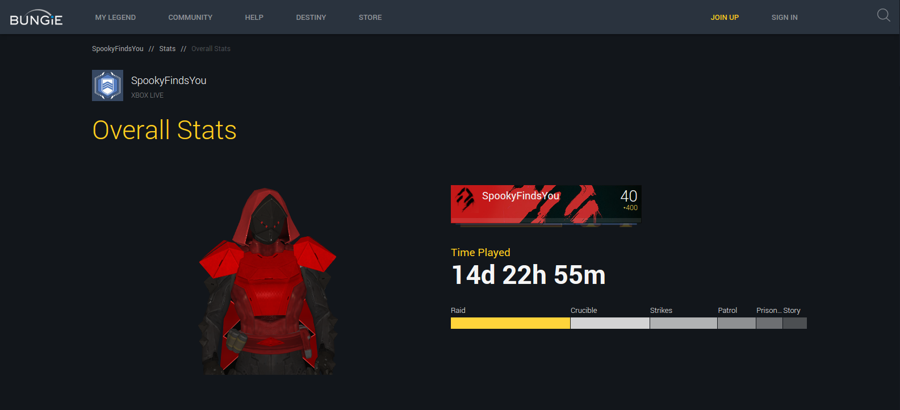
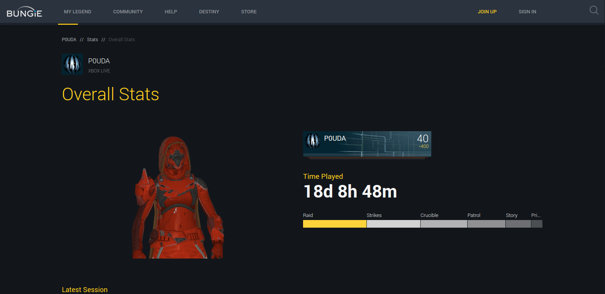
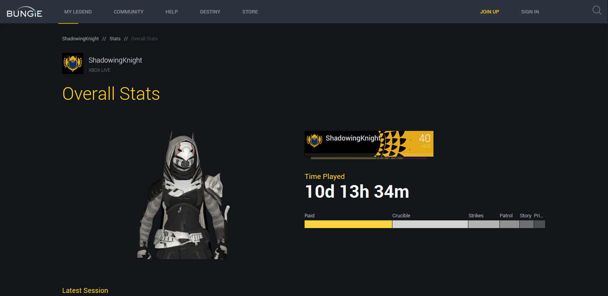

Space Wizards Inc. strives to provide all
raid, mission, and strike support services for any class combination
fireteam.
The Sunsinger
SW Inc. Sunsingers can provide a number of fireteam support abilities to
boost mob and add control for any mission.Solar Grenades that create a flare of
Solar Light which continually damages enemies trapped inside.Song of Flame
provides reduces cooldowns to all nearby allies.Viking Funeral makes any
targets afflicted with Ignite take more danage
from all sources and stacks 3 times, great for boosting fireteam damage
potential.
During King's Fall Raid, our 6th man had to leave (due to lack of husband
points, lol). SW Inc. was able to assign an experienced
Sunsinger who just melted adds and went ham on ogers.
Warlocks are just too beast.

SpookyFindsYou
runs this badass hunter, be mindfull of
your surroundings if you hope to have a chance of seeing this guy
coming. Most likely he'll find you and you'll only see him leaving
as you drop in a pool of your own blood. Have your ghost ready for
back-to-back revives.
The Storm Caller
Storm Caller's are a favority on many Night Fall missions, especially
when arc damage is a must.Nothing says, "Back off" like a raging Storm Caller mowing down
adds like toilet paper in a lightening storm.
As a NightStalker, I'm no slouch with it comes to add control.
You might only hear that first shadow stop rip but it's already too
late. Poor adds never stand a chance. ButSW Inc. has
some seriously crazy ass Stormcallers. All I heard as, "Stormcaller Out"
and it was just chaos and arc bolts and body parts...then...calm...a
quiet quiet calm...

P0UDA
is utterly dangerous with his
shadow shot. You want to completely deny an area during raids, P0UDA
is your go to Nightstalker. Modern day Space-Robin-Hood with orbs-o-plenty!
The Void Walker
Nothing like a face full of Nova Bomb to really rock an entire
enemy team on any play style pvp.Your fireteam will enjoy the constant and fear-riddled shrieks of terror
from your enemies and your SW Inc. Warlock drops ample amounts of
Nova
During a sweaty round of Clash, we requested one of SW Inc'sVoid Walkers to put the other team in check. Needless to
say, each time we heard that Nova Bomb rip our ears filled with the sweet
sound of fear and anger from the enemy team as they vanshied into nothingness.

ShadowingKnight
can be seen running a
beast of a Titan Striker. Let's be honest, turning a corner just to
see a Titan beast streaking across your screen and hearing that smash
and sweet nothingness...can't do much about that. Timing is everything,
and ShadowingKnight displays this through art and poetry in motion that
ends with an arc filled smash.